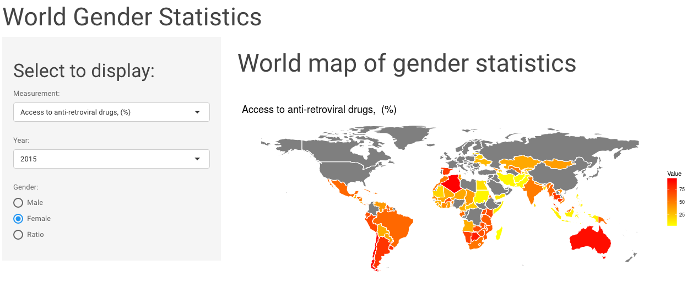

All posts
January 29, 2017
Exploring World Gender Statistics with Shiny
This week I explored the World Gender Statistics dataset. You can look at 160 measurements over 56 years with my Shiny app here.

I prepared the data as follows:
Data.csv
- Country.Name: the name of the country
- Country.Code: the country’s code
- Indicator.Name: the name of the variable that this row represents
- Indicator.Code: a unique id for the variable
- 1960 - 2016: one column EACH for the value of the variable in each year it was available
dataset <- read.csv("Data.csv")
dataset_subs <- dataset[grep(".FE|.MA", dataset$Indicator.Code), ]
head(dataset_subs)
dataset_subs$Indicator.Name <- as.character(dataset_subs$Indicator.Name)
dataset_fem <- dataset[grep("female", dataset$Indicator.Name), ]
dataset_fem$Indicator.Name <- gsub("female", "", dataset_fem$Indicator.Name)
dataset_fem$Indicator.Code <- gsub(".FE", "", dataset_fem$Indicator.Code)
dataset_fem$gender <- "female"
dataset_male <- dataset[-grep("female", dataset$Indicator.Name), ]
dataset_male$Indicator.Name <- gsub("male", "", dataset_male$Indicator.Name)
dataset_male$Indicator.Code <- gsub(".FE", "", dataset_male$Indicator.Code)
dataset_male$gender <- "male"
dataset_fem <- dataset_fem[which(dataset_fem$Indicator.Name %in% dataset_male$Indicator.Name), ]
dataset_male <- dataset_male[which(dataset_male$Indicator.Name %in% dataset_fem$Indicator.Name), ]
dataset_fem <- dataset_fem[which(dataset_fem$Country.Code %in% dataset_male$Country.Code), ]
dataset_male <- dataset_male[which(dataset_male$Country.Code %in% dataset_fem$Country.Code), ]
library(dplyr)
dataset_fem <- arrange(dataset_fem, Country.Code)
dataset_male <- arrange(dataset_male, Country.Code)
dataset_fem$Country.Code <- as.character(dataset_fem$Country.Code)
dataset_male$Country.Code <- as.character(dataset_male$Country.Code)
save(dataset_fem, file = "dataset_fem.RData")
save(dataset_male, file = "dataset_male.RData")
length(unique(dataset_fem$Indicator.Name)) == length(unique(dataset_male$Indicator.Name))
for (n in 1:length(unique(dataset_fem$Indicator.Name))) {
code <- unique(dataset_fem$Indicator.Name)[n]
print(code)
fem <- dataset_fem[which(dataset_fem$Indicator.Name == code), ]
male <- dataset_male[which(dataset_male$Indicator.Name == code), ]
for (i in 1:nrow(fem)) {
if (i == 1) {
diff <- male[i, 5:61] / fem[i, 5:61]
diff_table <- cbind(male[i, c(1:4)], diff)
} else {
diff <- male[i, 5:61] / fem[i, 5:61]
diff_table <- rbind(diff_table,
cbind(male[i, c(1:4)], diff))
}
}
if (n == 1) {
diff_table_bind <- diff_table
} else {
diff_table_bind <- rbind(diff_table_bind, diff_table)
}
}
diff_table_bind$Country.Code <- as.character(diff_table_bind$Country.Code)
diff_table_bind[diff_table_bind == "NaN"] <- NA
save(diff_table_bind, file = "diff_table_bind.RData")
measures <- unique(diff_table_bind$Indicator.Name)
save(measures, file = "measures.RData")
years <- gsub("X", "", colnames(diff_table_bind)[-c(1:4)])
years <- years[-length(years)]
save(years, file = "years.RData")
Map
The map has been downloaded from http://www.naturalearthdata.com/downloads/110m-cultural-vectors/
library(rgdal)
library(ggplot2)
library(plyr)
library(dplyr)
library(scales)
wmap_countries <- readOGR(dsn="shapefiles", layer="ne_110m_admin_0_countries")
wmap_countries_df <- fortify(wmap_countries)
wmap_countries@data$id <- rownames(wmap_countries@data)
wmap_countries_df_final <- join(wmap_countries_df, wmap_countries@data, by = "id")
wmap_countries_df_final$gu_a3 <- as.character(wmap_countries_df_final$gu_a3)
save(wmap_countries_df_final, file = "wmap_countries_df_final.RData")
## R version 3.3.2 (2016-10-31)
## Platform: x86_64-apple-darwin13.4.0 (64-bit)
## Running under: macOS Sierra 10.12.1
##
## locale:
## [1] en_US.UTF-8/en_US.UTF-8/en_US.UTF-8/C/en_US.UTF-8/en_US.UTF-8
##
## attached base packages:
## [1] stats graphics grDevices utils datasets methods base
##
## loaded via a namespace (and not attached):
## [1] backports_1.0.4 magrittr_1.5 rprojroot_1.1 tools_3.3.2
## [5] htmltools_0.3.5 yaml_2.1.14 Rcpp_0.12.8 stringi_1.1.2
## [9] rmarkdown_1.3 knitr_1.15.1 stringr_1.1.0 digest_0.6.11
## [13] evaluate_0.10